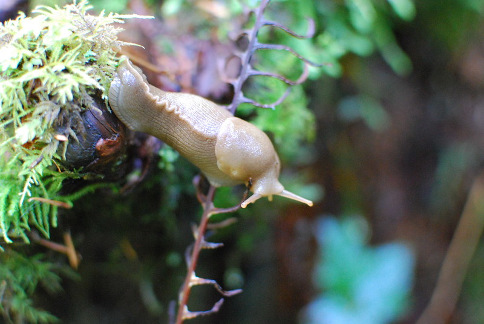

Slugs, a common garden pest, may have more to offer than one might think. Recent studies into slug biology have revealed numerous health benefits made possible by the natural compounds found in their bodies.
 Karen Neoh, on FlickrProteins unique to a slug's biological systems have been connected to an improved immune system, better eyesight, and increased energy levels. Interactions with brain chemistry also decrease brain fog and boost cognition. Furthermore, antioxidant compounds also present in slugs can even reduce the risk of cancer!
These benefits are only the surface of what we could gain from these wonderful creatures. Researchers are uncovering new uses for the compounds in slugs on a daily basis. This new field of research holds much promise for future development.
Sponsored by Slug Supplements Co.